Sarah Chen
Abstract expressionist exploring the emotional resonance of color through large-scale paintings that invite contemplation and introspection.
View ProfileMeet the talented creators shaping contemporary art in the Bay Area and beyond
Abstract expressionist exploring the emotional resonance of color through large-scale paintings that invite contemplation and introspection.
View Profile
Mixed media artist examining urban landscapes and cultural identity through layered compositions of photography, paint, and found materials.
View Profile
Sculptor creating immersive installations that challenge spatial perception using organic forms and innovative materials.
View Profile
Photographer documenting the evolving Oakland art community with intimate portraits and street photography.
View Profile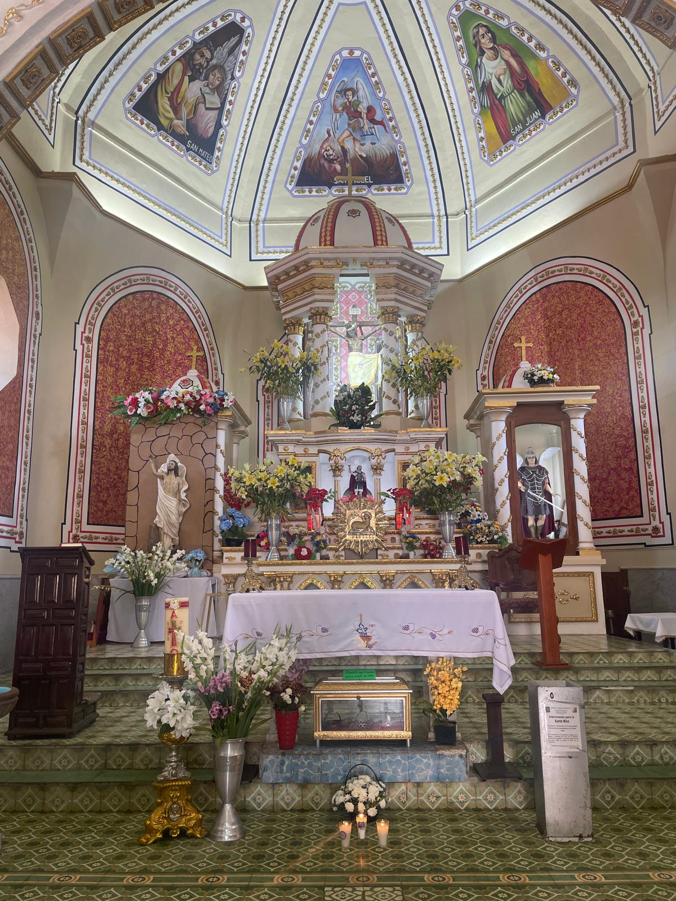
Painter blending traditional Japanese ink techniques with contemporary abstract approaches to create meditative works.
View Profile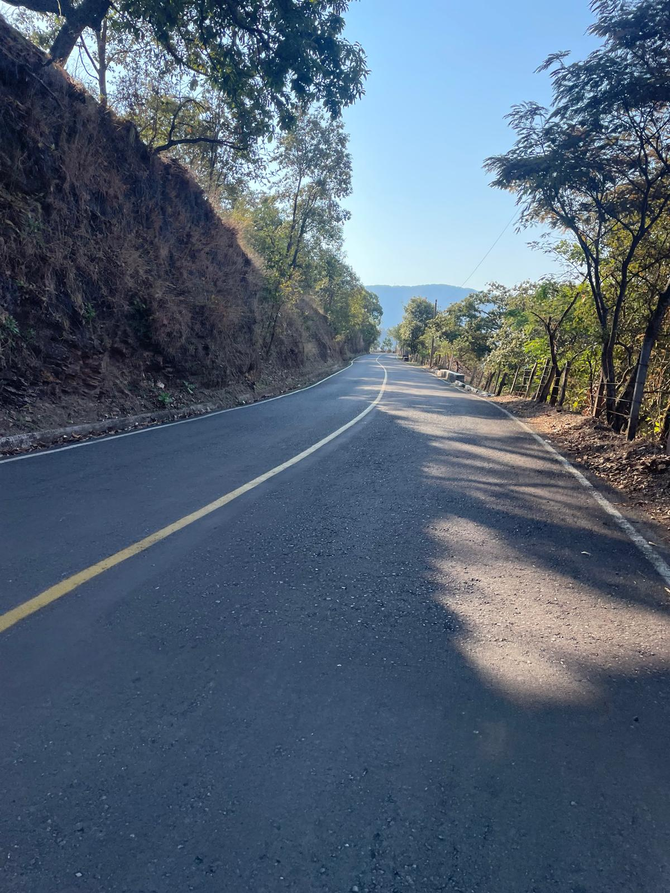
Digital artist and photographer exploring the intersection of technology and nature through innovative image-making processes.
View Profile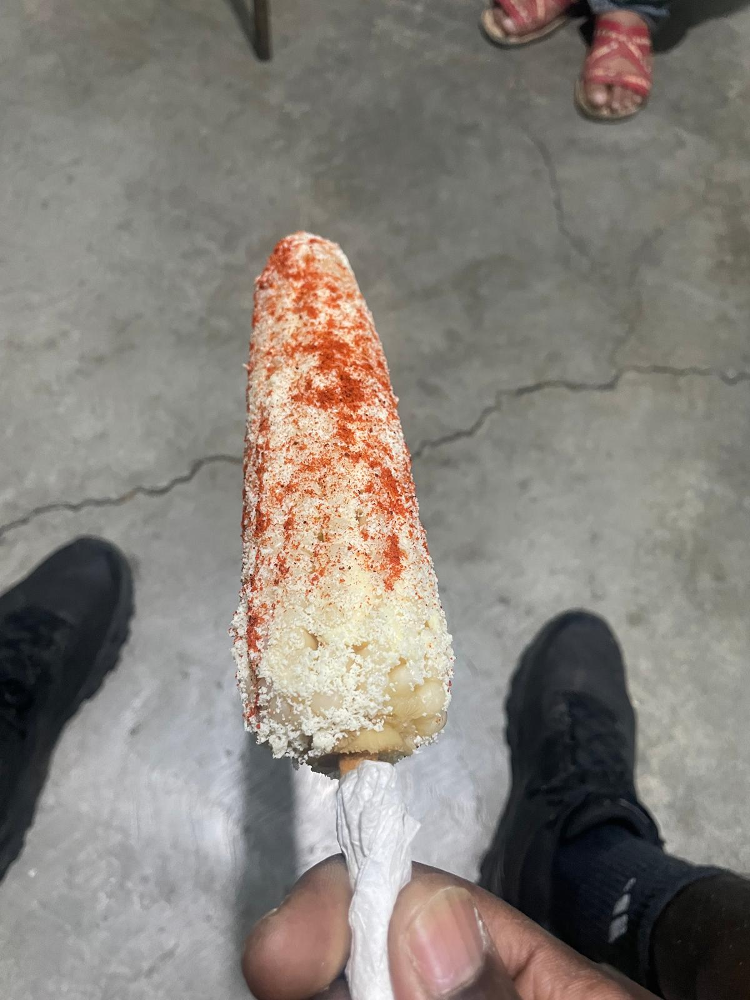
Muralist and painter celebrating Latino cultural heritage through vibrant, story-driven works that connect community and history.
View Profile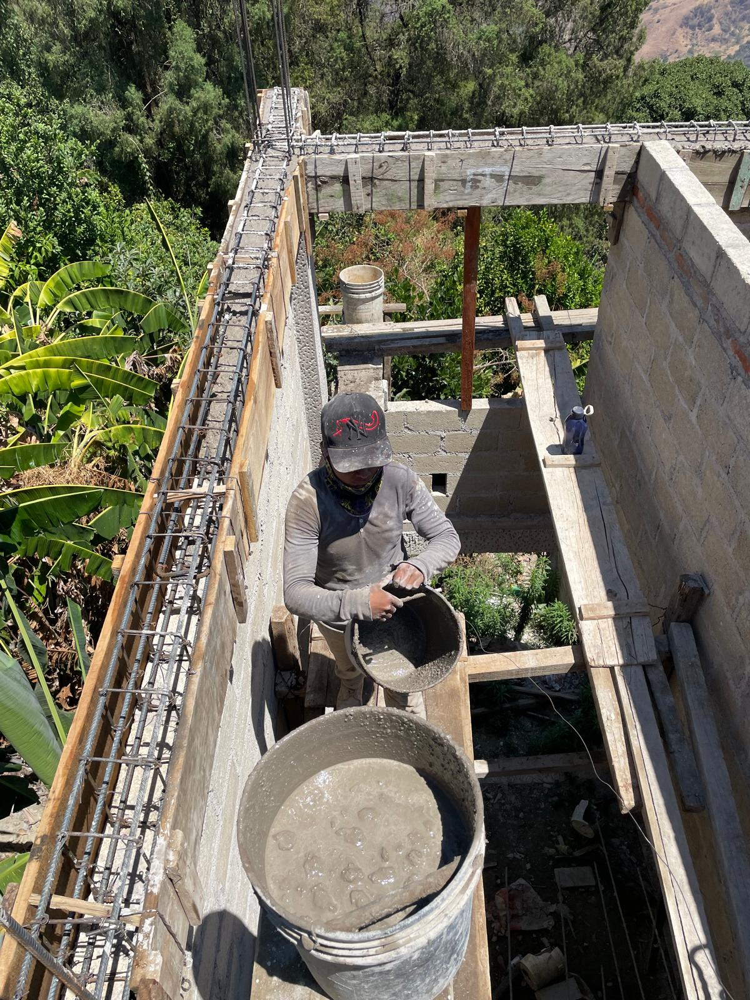
Fiber artist reimagining traditional quilting techniques to create contemporary textile works addressing social justice themes.
View Profile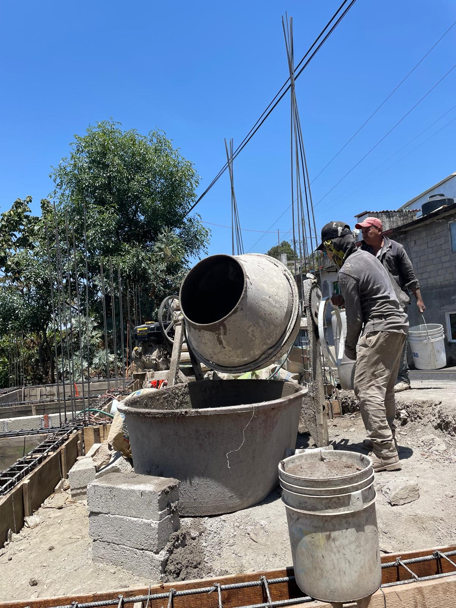
Sculptor working with reclaimed industrial materials to create thought-provoking pieces about consumption and sustainability.
View Profile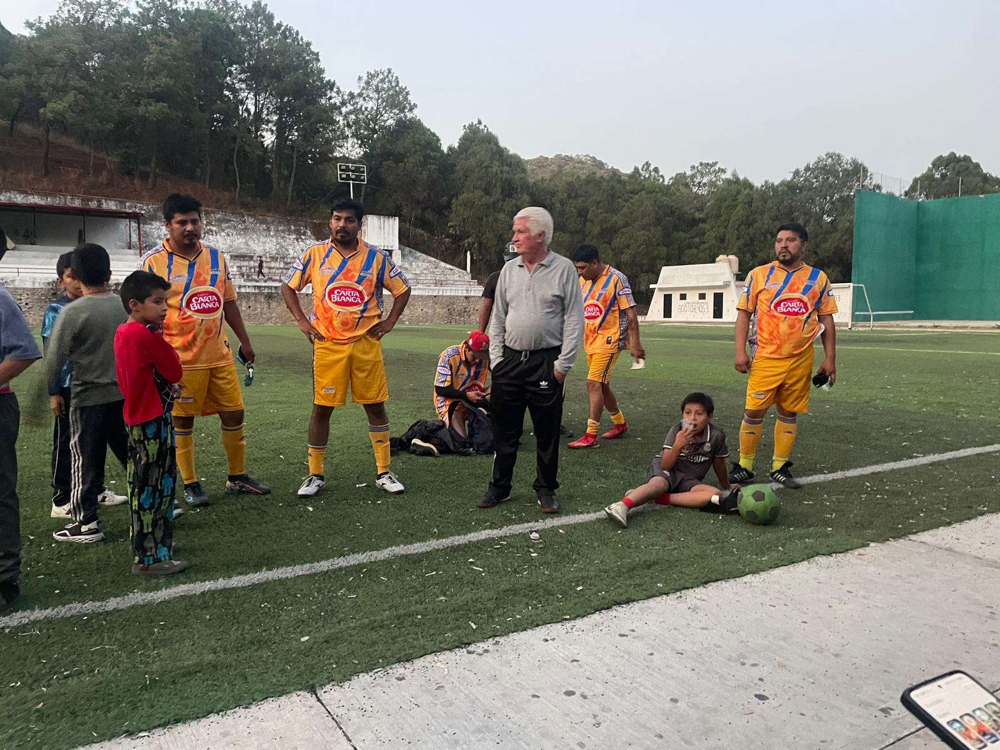
Installation artist creating immersive environments that explore memory, place, and the passage of time through light and shadow.
View Profile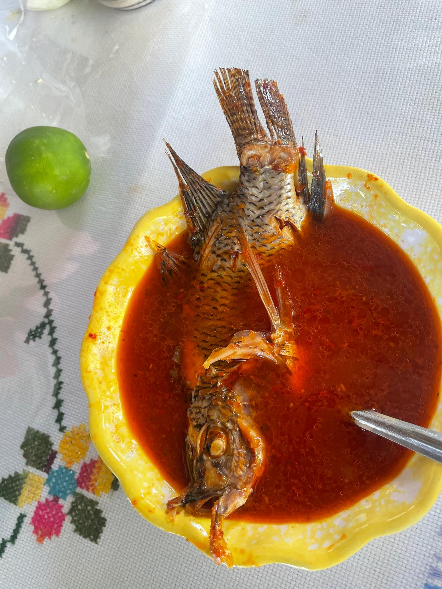
New media artist experimenting with interactive installations and generative art exploring human-computer interaction.
View Profile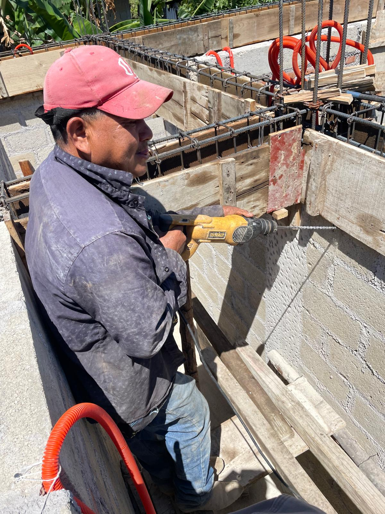
Video artist and filmmaker creating non-linear narratives that examine diaspora, identity, and cultural memory.
View Profile
Sarah Chen is a San Francisco Bay Area-based abstract painter whose work explores the emotional and psychological dimensions of color. Born in 1985 in Taipei, Taiwan, Chen moved to California at age 12 and received her MFA from California College of the Arts in 2010.
Her large-scale paintings have been exhibited nationally and are held in numerous private and corporate collections. Chen has received awards from the Pollock-Krasner Foundation and the Joan Mitchell Foundation.
"My paintings are meditations on color as a carrier of emotion. I'm interested in how subtle shifts in hue, saturation, and value can evoke powerful psychological responses. Through layering and blending, I create atmospheric spaces that invite viewers to pause, reflect, and connect with their inner emotional landscape."
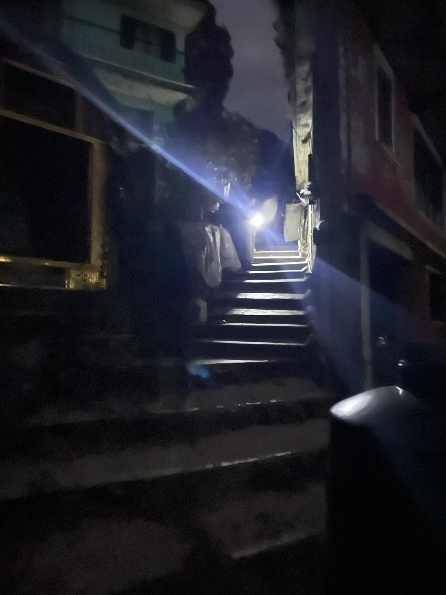
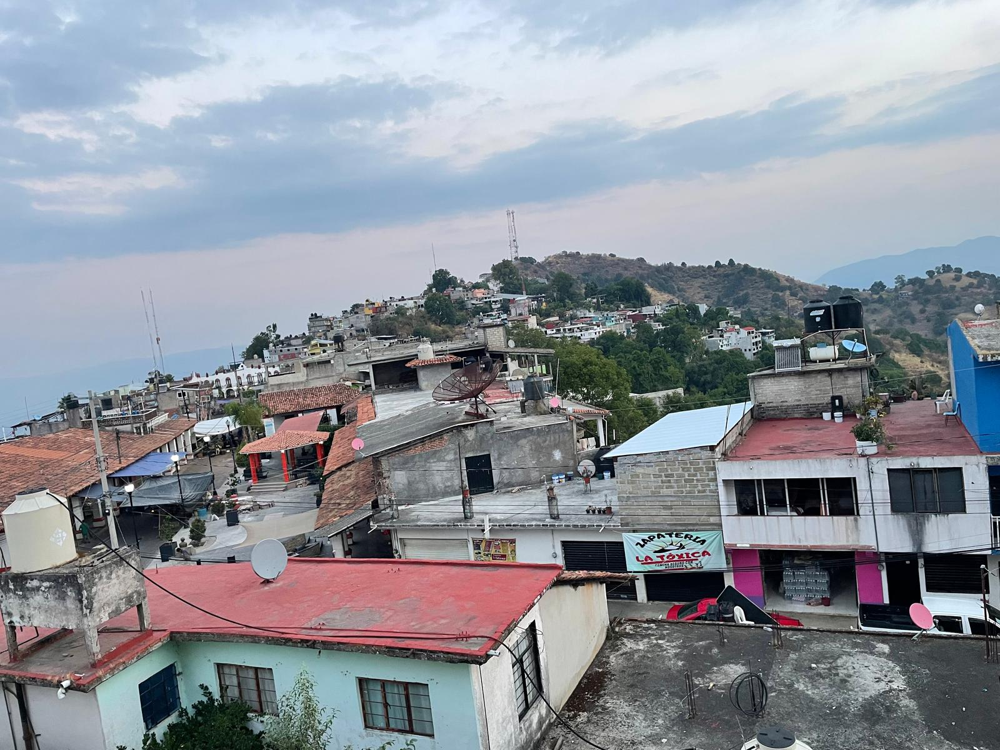
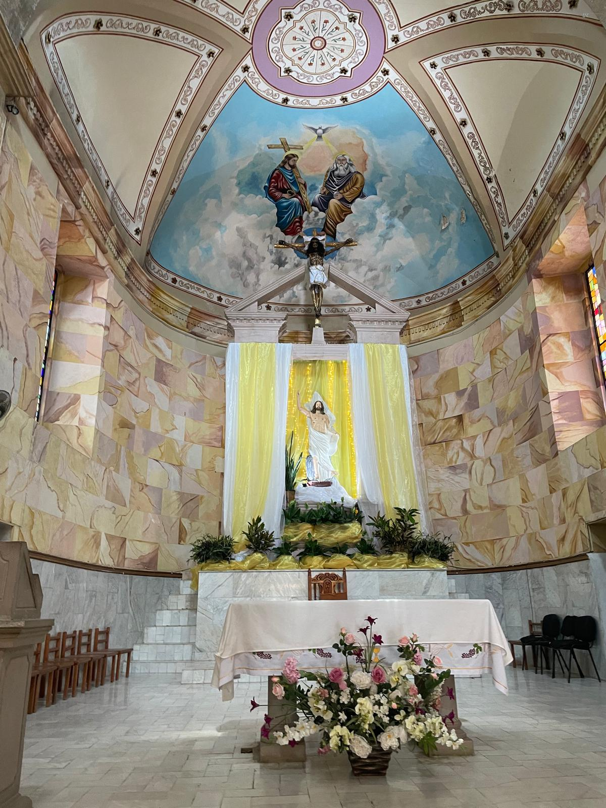
Orchard Galleries is committed to supporting the next generation of artistic talent. Our Emerging Artists Program provides exhibition opportunities, professional development resources, and connections to collectors and curators for promising early-career artists.
We actively seek out fresh voices and bold experimentation, believing that emerging artists bring vital energy and new perspectives to the contemporary art conversation.
Through mentorship, studio visits, and featured exhibitions, we help launch careers and build sustainable practices for artists at the beginning of their professional journeys.
Submit Your PortfolioSeveral times a year, we open our doors for special Open Studio events where visitors can meet artists in their creative spaces, observe works in progress, and engage in conversations about artistic practice.
These intimate gatherings provide unique opportunities to see behind the scenes, ask questions, and gain deeper insight into how contemporary art is made.
Open Studio events are free and open to the public. Check our events calendar for upcoming dates.
View Upcoming Open Studios